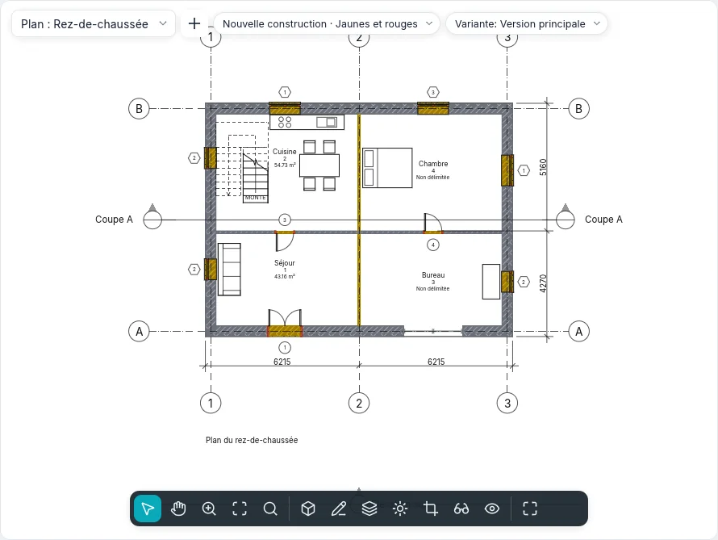

Phases et démolitions
Une rénovation se dessine en phases : l'état existant, la nouvelle construction et, si besoin, les phases intermédiaires. Chaque élément du modèle est créé dans une phase et peut être démoli dans une phase suivante ; chaque vue montre le modèle tel qu'il est dans sa phase, avec un filtre des phases qui décide comment se voient les éléments nouveaux, existants, démolis et temporaires. Un seul modèle donne ainsi le plan de l'état existant, celui des démolitions, celui du projet et le plan comparatif en jaunes et rouges.
Les états de la phase
La phase de la vue et les deux phases d'un élément donnent son état dans cette vue :
| État | L'élément… |
|---|---|
| Nouveau | est créé dans la phase de la vue |
| Existant | est créé dans une phase précédente et n'est pas démoli jusqu'à la phase de la vue |
| Démoli | est créé dans une phase précédente et démoli dans la phase de la vue |
| Temporaire | est créé et démoli dans la phase de la vue |
Un élément créé après la phase de la vue, ou démoli avant, n'existe pas dans cette vue.
Les phases du projet
Projet ▸ Phases ▸ Phases (style BIMopen : Projet ▸ Phases…) ouvre la boîte de dialogue Phases, avec trois onglets. Un projet nouveau a Existant et Nouvelle construction.
Dans l'onglet Phases du projet, chaque phase est une ligne numérotée, du passé (en haut) au futur (en bas), avec Nom et Description. Un clic sur le numéro sélectionne la ligne.
- Insérer avant et Insérer après ajoutent une phase à côté de celle sélectionnée, nommée en séquence (Phase 1, Phase 2…). Les phases ne se réordonnent pas : insérez-les au bon endroit.
- Combiner avec ▸ Précédent ou Suivante supprime la phase sélectionnée : les éléments, les vues, les nomenclatures et les pièces qui l'utilisaient passent à la phase avec laquelle elle est combinée.
Les noms ne peuvent être ni vides ni répétés. OK applique les trois onglets ensemble, en un seul pas que Annuler (Ctrl+Z) défait ; Annuler de la boîte de dialogue ne change rien. L'interrupteur Aperçu dans l'en-tête montre la vue active avec les modifications pas encore confirmées, avec le filtre choisi sous l'aperçu.
Les filtres des phases
Dans l'onglet Filtres des phases, chaque filtre dit, pour chaque état (Nouveau, Existant, Démoli, Temporaire), si les éléments se dessinent Par catégorie (comme le disent les styles et les remplacements de la vue), Remplacé (avec les remplacements graphiques de l'état) ou Ne pas afficher (ils ne se dessinent ni ne se sélectionnent).
| Filtre prédéfini | Nouveau | Existant | Démoli | Temporaire |
|---|---|---|---|---|
| Afficher tout | Par catégorie | Remplacé | Remplacé | Remplacé |
| Afficher démoli + nouveau | Par catégorie | Ne pas afficher | Remplacé | Remplacé |
| Afficher nouveau | Par catégorie | Ne pas afficher | Ne pas afficher | Ne pas afficher |
| Afficher précédent + démoli | Ne pas afficher | Par catégorie | Remplacé | Ne pas afficher |
| Afficher précédent + nouveau | Par catégorie | Par catégorie | Ne pas afficher | Ne pas afficher |
| Afficher la phase précédente | Ne pas afficher | Remplacé | Remplacé | Ne pas afficher |
| Jaunes et rouges | Remplacé | Remplacé | Remplacé | Ne pas afficher |
Nouveau ajoute un filtre (tout par catégorie), Supprimer l'enlève : si une vue l'utilise, la boîte de dialogue le demande d'abord, et ces vues passent à Aucun. Dans la première phase, Afficher la phase précédente ne montre rien. Pour tout voir sans remplacements, on choisit Aucun comme filtre de la vue.
Les remplacements graphiques
L'onglet Remplacements graphiques a une ligne par état : Lignes de projection et Lignes de coupe (épaisseur, couleur, motif de ligne), Motifs de surface et Motifs de coupe (visible, motif, couleur ; Effacer les remplacements revient à ceux de la catégorie), Demi-teinte (lignes, motifs et remplissages estompés vers le fond, mais pas les couleurs des matériaux des vues ombrées) et Matériau (sa couleur ombrée et son aspect dans les vues ombrées et réalistes).
Ils s'appliquent là où un filtre dit Remplacé. Les filtres de la vue et le graphisme par élément l'emportent sur eux. Les valeurs par défaut suivent l'usage italien : existant gris, démoli jaune en tirets, nouveau rouge, temporaire en pointillés en demi-teinte.
La phase des vues
Les plans, les plans des faux plafonds, les coupes, les élévations, les vues 3D, les plans de surface et les nomenclatures ont dans le groupe Phases de leurs propriétés Filtre des phases et Phase. Une vue nouvelle prend la dernière phase et Afficher tout ; Dupliquer la vue garde la phase et le filtre, puis chacun se change : le même niveau à deux moments. Un gabarit de vue peut fixer le filtre (Filtre des phases parmi les propriétés incluses), jamais la phase.
Dans le style BIMopen, l'étiquette Phase · Filtre en haut de la vue ouvre un menu qui change l'une ou l'autre.
Les phases des éléments
Chaque élément du modèle (murs, portes, fenêtres, composants, sols, toits, faux plafonds, colonnes, escaliers, garde-corps, rampes, murs-rideaux) a dans le groupe Phases de ses propriétés :
- Phase de création : celle de la vue dans laquelle l'élément a été créé (ou collé) ;
- Phase de démolition : Aucune, ou la phase dans laquelle il est démoli ; seules la phase de création et les suivantes sont proposées, et Aucune annule la démolition.
Les annotations, les cotes, les textes et les éléments de détail n'ont pas de phases : ils appartiennent à leur vue. Les sous-murs d'un mur empilé et les morceaux d'un mur courbe suivent le mur entier. Les projets antérieurs, avec les deux phases fixes des murs, s'ouvrent avec les phases du même nom.
Démolir
Modifier ▸ Formes ▸ Démolir (style BIMopen : Modifier ▸ Démolir) fonctionne dans les plans, les coupes, les élévations et les vues 3D. Le marteau apparaît à côté du curseur et ce qui peut être démoli dans la phase de la vue est mis en évidence. Un clic démolit l'élément dans cette phase, dans toutes les vues de la même phase :
- un mur démoli emporte ses portes et ses fenêtres ;
- un élément créé dans la même phase devient temporaire ;
- si le filtre de la vue ne montre pas les éléments démolis, l'élément disparaît aussitôt.
Avec des éléments déjà sélectionnés, Démolir les démolit tous aussitôt, puis attend d'autres clics. Échap ou Modifier ferment l'outil ; chaque clic est un pas d'annulation.

Les remplissages
Là où une porte ou une fenêtre est démolie et que son mur reste, le trou se remplit à partir de la phase de la démolition, avec les couches du mur : cela se voit en plan, en coupe, en élévation et en 3D. Là où une ouverture est faite dans une phase postérieure à celle du mur, le mur est entier dans les phases précédentes.
Un remplissage se sélectionne d'un clic, par exemple dans une coupe avec Afficher précédent + nouveau : son Type se change en un autre type de mur de base, pour dessiner un remplissage différent ; le remplissage des phases antérieures à l'ouverture a toujours la structure du mur. Les remplissages ne se déplacent, ne se font pivoter, ne se reflètent, ne se copient ni ne se collent : ils suivent leurs ouvertures.
Pièces et nomenclatures par phase
Une pièce appartient à la phase de la vue dans laquelle elle est placée (sa Phase est en lecture seule) : un plan montre, étiquette et sélectionne seulement les pièces de sa phase, et le même numéro peut exister dans des phases différentes. Une pièce est délimitée par les éléments qui existent à la fin de sa phase : démolir une cloison change les pièces de cette phase et des suivantes, pas celles de l'état existant. Copier dans le presse-papiers une pièce depuis une vue et Coller dans la vue active dans une vue d'une autre phase : la pièce passe à cette phase avec les mêmes propriétés.
Une nomenclature a Phase et Filtre des phases comme les vues (dans Nouvelle nomenclature, la phase proposée est la dernière) : les lignes sont les éléments tels qu'ils sont dans cette phase, ceux que le filtre montre. Afficher précédent + démoli liste les portes à enlever, Afficher nouveau celles à acheter. Les champs Phase de création et Phase de démolition s'affichent, se trient, se filtrent et se modifient depuis la cellule.
Les filtres de vue ont des règles sur Phase de création et Phase de démolition : égal ou différent, et inférieur à / supérieur à pour avant ou après dans l'ordre des phases.
Légendes de phase
Un composant de légende a la propriété État de la phase : avec Existant, Démoli, Nouveau ou Temporaire, l'échantillon se dessine avec les remplacements de cet état, à côté de son texte.
Échange
- IFC : avec un projet à phases, Exporter ▸ IFC demande la Phase à exporter (la dernière est proposée). Les éléments qui existent dans cette phase sont écrits, chacun avec son état (Status : NEW, EXISTING, DEMOLISH, TEMPORARY) dans le jeu de propriétés commun de sa classe et ses deux phases par leur nom. À l'ouverture d'un fichier IFC, les objets avec cet état prennent les phases correspondantes du projet.
- DWG et DXF : dans Exporter des formats CAO, l'option État de la phase dans le nom du calque ajoute au calque de la catégorie le suffixe de l'état (-EXST, -DEMO, -NEWW, -TEMP) : un mur démoli va sur A-WALL-DEMO.
La correspondance des phases des modèles liés arrivera avec les modèles liés.